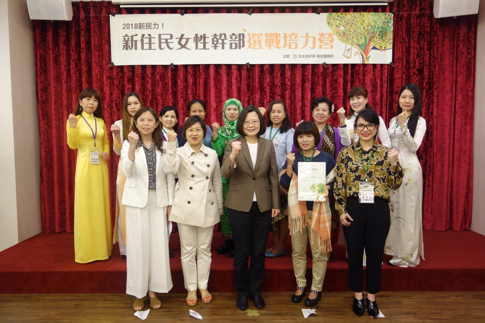

2018-03-25
2018新民力！蔡英文主席出席民進黨新住民女性幹部選戰培力營 鼓勵新住民參與公共事務
民進黨婦女部於24日至25日在台中舉辦「2018新民力！新住民女性幹部選戰培力營」，共有來自全國各縣市近百名新住民幹部參加兩天一夜的營隊。營隊課程邀請有豐富選戰經驗的講師，來帶領大家熟悉並參與年底地方選舉的輔選工作。蔡英文主席也親自出席結業式，邀請新住民加入年底輔選工作，鼓勵新住民一起來參與公共事務，成為民進黨的新力量，一同打贏年底的選戰，讓改革力量持續向前邁進。她更期許未來在座的姊妹，也能成為候選人。
蔡英文主席致詞時表示，落實族群平等、支持多元文化，是民進黨長期以來的施政目標，也是民進黨的基本價值。她表示政府也會全力協助新住民投入就業市場，不論是旅遊、長照、語言教學、或是通譯服務，她鼓勵大家發揮自己的專長，尤其隨著新南向政策的推動，新住民就是台灣第一線的人才。
除了讓新住民安居樂業，蔡英文主席也鼓勵新住民朋友一起來參與公共事務，「自己來改變社會、自己來推動改革」，她表示每一位新住民朋友，都是台灣社會推動政策的重要力量，希望新住民都能對政治有更多參與，她並鼓勵新住民姊妹多參加民主政治相當重要的選舉活動。「民進黨的核心理念，就是維護每一個族群參與政治的權利，這也是我們一貫的施政目標。」蔡主席表示，新住民朋友為台灣社會帶來不同的聲音，也是民主政治的重要力量，支持新住民參與公共事務，就是發展台灣的民主政治。
營隊課程也特別邀請到台中市市長林佳龍擔任「民主進步的力量」講師，林佳龍市長勉勵在座新住民自我組織起來並發聲。他表示，現代公民應該關心公共事務，沒有去參與的話會被決定，台灣提供大家自由參與政治的機會，選舉投票不但是公民盡自己的責任也是一種權利。林佳龍市長並鼓勵現場的新住民參加培力營後成為種子，傳承給後面的人，一起支持理想的政黨和政治人物。
除了台中市市長林佳龍講授「民主進步的力量」，課程另有「民進黨新住民好政」、「姊妹助選團」、「市場掃街教戰」、「活動高手就是妳」、「拜票助選王」，內容精彩豐富，除了讓新住民女性幹部了解與自身權益相關的政策議題，也提供選戰實務經驗分享，為即將到來的年底選戰備戰。
民進黨婦女部主任蔡宛芬表示，感謝來自各縣市的新住民幹部的參與，希望新住民姊妹透過兩天的課程得到滿滿的收穫，未來能邀請更多的姊妹參與投入到公共事務，與民進黨一起努力，讓台灣社會可以看到新住民的力量，一起打贏年底選戰。
